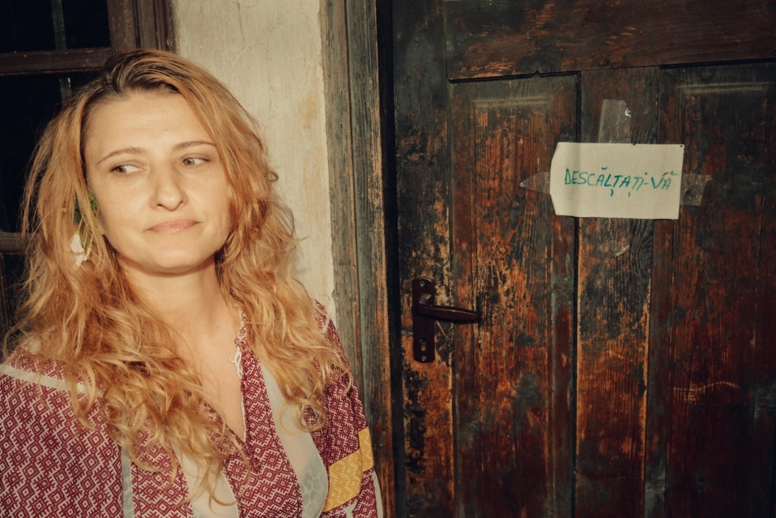
Elena
Elena is a long-term photographic portrait developed since 2011. Rooted in a friendship that began years before the project, it has grown through occasional encounters over time, following the quiet gestures, familiar places and everyday moments that gradually shape a life. Rather than documenting events, it observes the passing of time through repeated visits, allowing both the portrait and the landscape to evolve together.
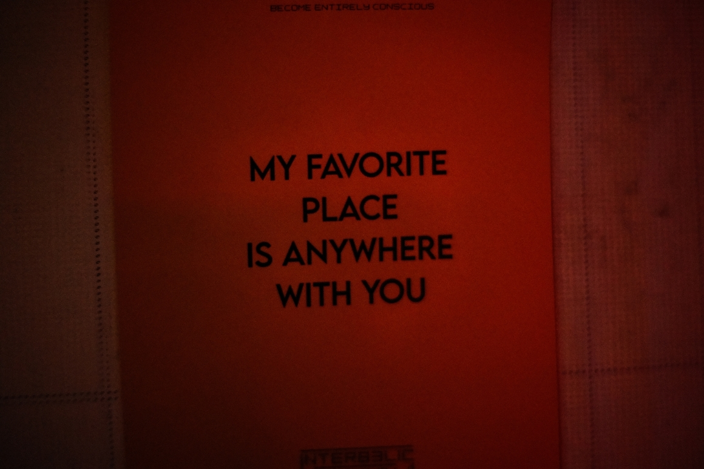
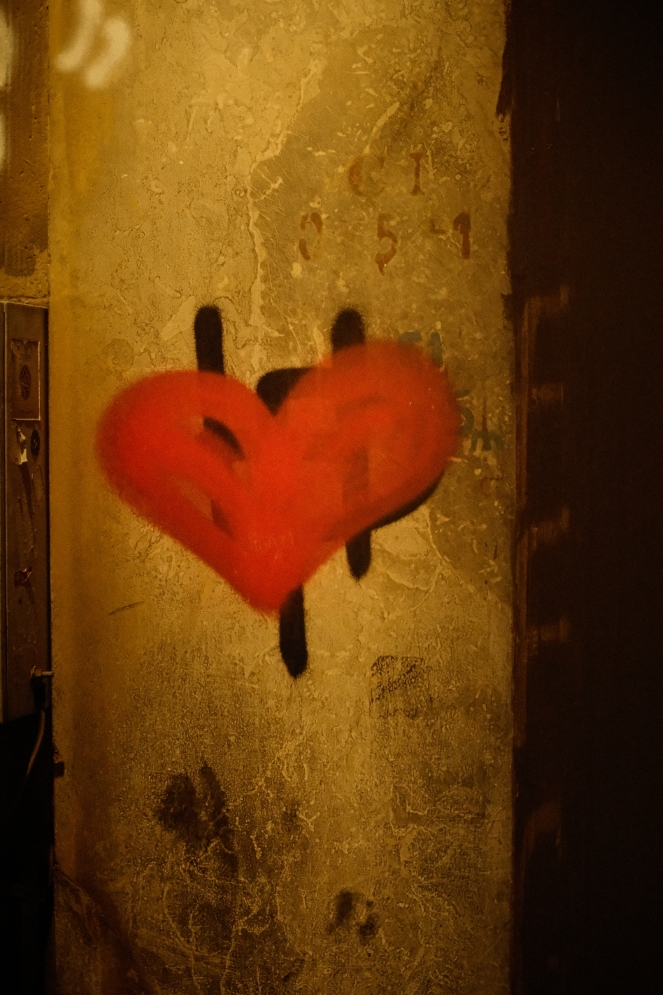
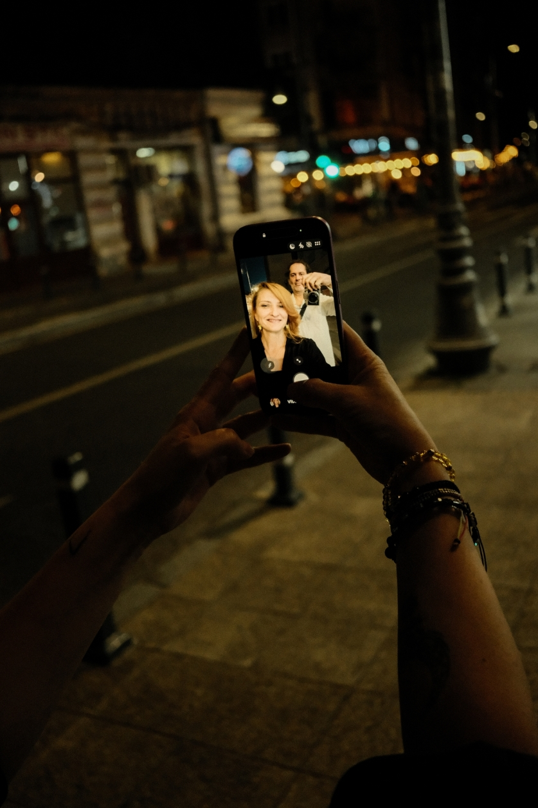
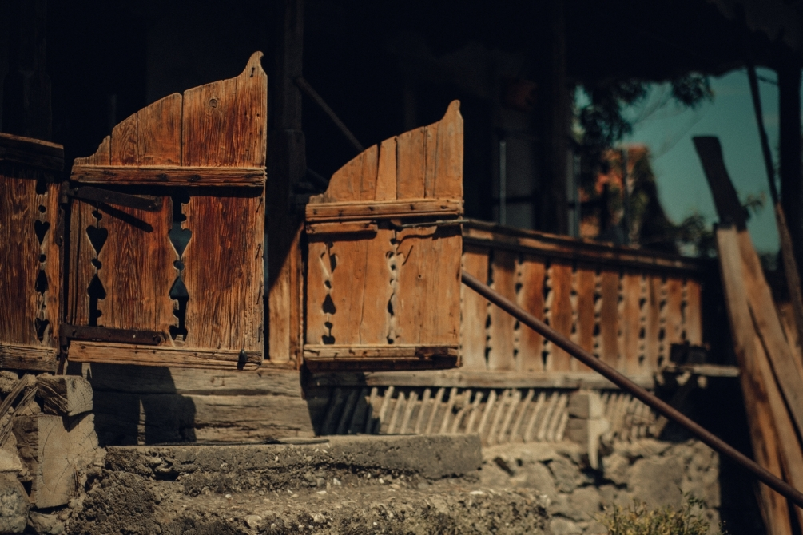
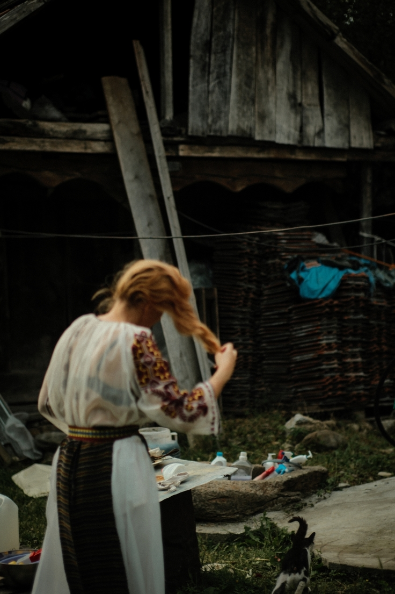
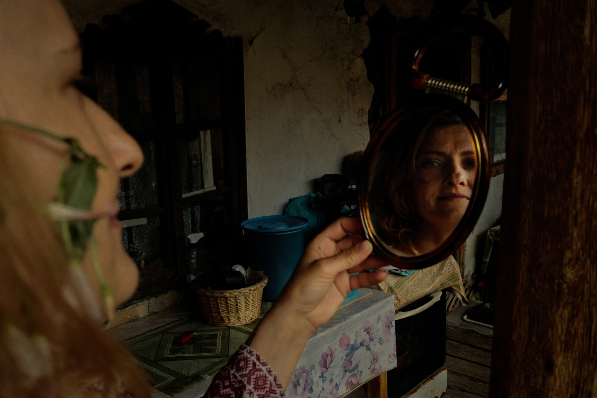
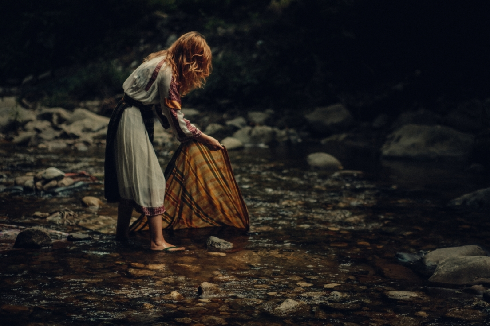
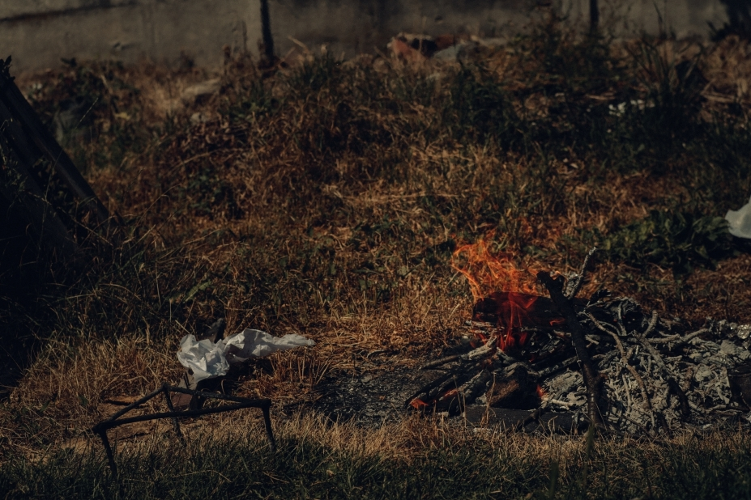
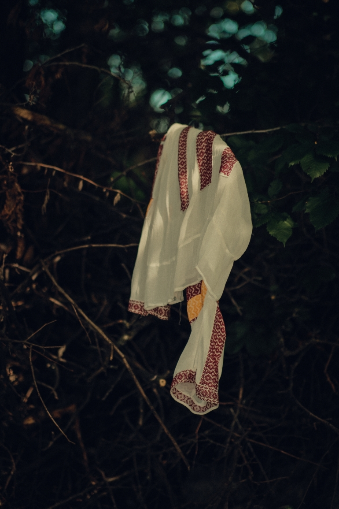
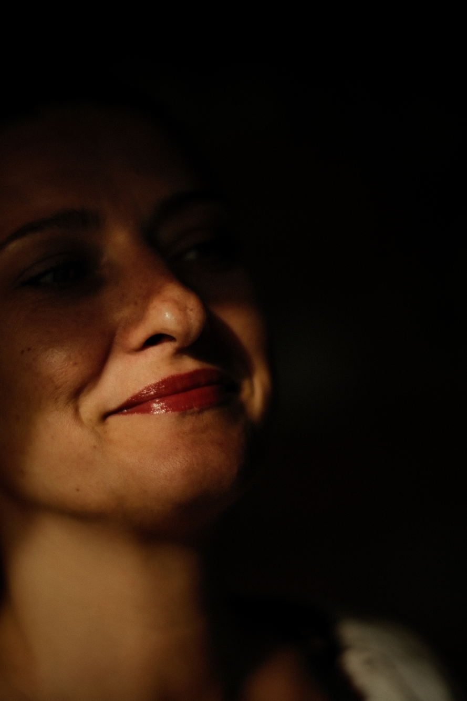